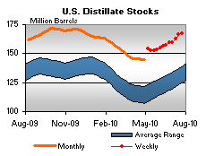

Released on July 28, 2010
(Next Release on August 4, 2010)
Algae: A Potential Source of Future Fuels?
Algae have been studied for many years as a potential renewable energy feedstock to produce motor fuels. Below, we discuss the attributes of algae that make it potentially attractive and some of the technological and economic challenges in algae cultivation, harvesting, and oil extraction that must be addressed before algae-based fuels can be commercially produced.
Algae are primarily aquatic plant-like organisms that convert light, carbon dioxide (CO2), water, and nutrients such as nitrogen and phosphorus into oxygen and biomass, including lipids – the generic name for the primary storage form of natural oils. Single-cell or microalgae are most interesting because of the speed and efficiency at which they produce lipids. However, some of them can be susceptible to contamination from bacteria, viruses, and other undesirable algal species, which can reduce the quality and yield of the lipids. Consequently, researchers are trying to develop algal species that are both efficient at lipid production and resistant to contamination.
Algae can produce more lipids per acre of harvested land than terrestrial plants because of their high lipid content and rapid growth rates. The National Renewable Energy Laboratory (NREL) estimates that the oil yield for a moderately productive algal species could be about 1,200 gallons per acre; compared to 48 gallons per acre for soybeans. The high productivity of algae could significantly reduce the land use associated with production of biofuels. For example, it would take 62.5 million acres of soybeans (an area approximately the size of Wyoming) to produce the same 3 billion gallons of oil that could be produced from only 2.5 million acres of algae (an area approximately 70 percent the size of Connecticut). Three billion gallons of biodiesel represent about 8 percent of all the diesel fuel used for on-road transportation in the United States in 2008.
Algae have other desirable properties. Some can be grown on non-arable or non-productive land. They grow in brackish, saline, and fresh water, and can thrive in wastewater. Though algae can also produce valuable products such as vitamins and dietary supplements, they are not themselves a human food source so there is no direct competition between food and fuel. They do, however, compete with some of the nutrients required for growing food. Since they require CO2 for growth, algae can also sequester CO2 from power plants or other CO2 sources.
Currently, there are “open” and “closed” approaches to cultivating algae. Open cultivation essentially grows algae much like it grows in nature. Open systems usually consist of one or more ponds exposed to the atmosphere, or protected in greenhouses. Although open systems are the cheapest of current cultivation approaches, they create more opportunities for contamination. Other disadvantages include lack of temperature and light control, requiring that open systems must be located where the climate is warm and sunlight is abundant.
Closed systems, called photobioreactors, typically comprise enclosed translucent containers that allow photosynthesis to occur. The plastic or glass containers are arranged to maximize algae exposure to light. Indoor systems require artificial light, while outdoor systems can use natural sunlight or a combination of sunlight and artificial illumination. In closed systems, temperature, evaporation loss, light intensity, and contamination by other algal species can be controlled better. However, elements needed for algal growth, such as water, CO2, and other minerals, must be artificially introduced. Scaling these input requirements for commercial production is difficult and expensive. Capital costs for closed systems are generally substantially higher than for open systems.
Scalability remains a major obstacle. Harvesting and oil extraction are relatively costly. Large volumes of water need to be managed and recycled in the processing of algae. In addition, the use of chemical solvents for extracting the oil and energy requirements for each phase of the harvesting and oil extraction process add cost to the process. Once the oil has been extracted, various conversion pathways exist for transforming the oil into a liquid fuel. “Transesterification” (described in the April 21, 2010 TWIP is the pathway from algal oil to biodiesel. Alternatively, refining of algal oil yields renewable diesel or jet fuel, very similar to fuels produced from petroleum.
Currently, most estimates of the production cost of algal oil range from $4-$40 per gallon depending on the type of cultivation system used. Despite the many challenges, however, the Federal government, large energy companies, and venture capitalists are continuing to fund demonstration projects and research into developing algae-based biofuels for commercial application.
U.S. Average Gasoline and Diesel Prices Moving Up
The U.S. average price for regular gasoline increased about three cents to $2.75 per gallon, $0.25 higher than a year ago. The average on the East Coast moved up two cents to $2.67 per gallon. The largest increase occurred in the Midwest where the average went up nearly four cents to $2.74 per gallon. The Gulf Coast increased less than four cents to $2.59 per gallon. The average in the Rocky Mountains was essentially unchanged at $2.75 per gallon. On the West Coast, the average rose a penny to $3.07 per gallon. Inching up a fraction of a cent, the average in California was virtually unchanged at $3.13 per gallon.
For the first time since the week of June 21, the national average price for diesel fuel increased, moving up two cents to $2.92 per gallon, $0.39 above last year. Average prices on the East Coast and the Gulf Coast increased about two cents to $2.93 per gallon and $2.88 per gallon, respectively. The largest increase took place in the Midwest where the price climbed two and a half cents to $2.89 per gallon. Prices in the Rocky Mountains and on the West Coast went up nearly two cents to $2.92 per gallon and $3.06 per gallon, respectively. The average in California rose a penny to $3.13 per gallon.
Propane Inventories Edge Up
U.S. propane inventories continued their seasonal growth last week, edging up by a modest 0.5 million barrels to end at 53.0 million barrels total. The Midwest region gained the bulk of the stocks with 0.6 million barrels of new inventory. The Rocky Mountain/West Coast region added 0.1 million barrels and the East Coast regional stocks were effectively unchanged. The Gulf Coast region drew 0.1 million barrels of propane stocks. Propylene non-fuel use inventories decreased their share of total propane/propylene stocks from 6.0 percent to 5.4 percent.
Text from the previous editions of “This Week In Petroleum” is accessible through a link at the top right-hand corner of this page.
| Retail Prices (Cents Per Gallon) | |||||||
| Retail Data | Changes From | Retail Data | Changes From | ||||
| 07/26/10 | Week | Year | 07/26/10 | Week | Year | ||
| Gasoline | 274.9 | Diesel Fuel | 291.9 | ||||
| Spot Prices (Cents Per Gallon*) | |||||||||||||||||||||||||||||||||||
|
|||||||||||||||||||||||||||||||||||
| *Note: Crude Oil WTI Price in Dollars per Barrel. | |||||||||||||||||||||||||||||||||||
| Stocks (Million Barrels) | |||||||
|  | |||||||
| Stocks Data | Changes From | Stocks Data | Changes From | ||||
| 07/23/10 | Week | Year | 07/23/10 | Week | Year | ||
| Crude Oil | 360.8 | Distillate | 167.5 | ||||
| Gasoline | 222.2 | Propane | 53.010 | ||||